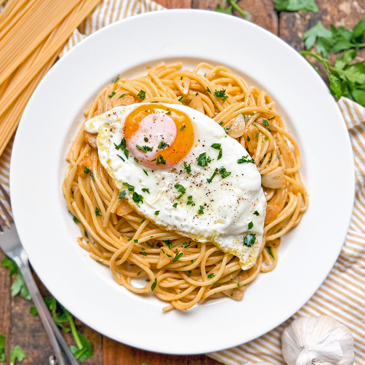
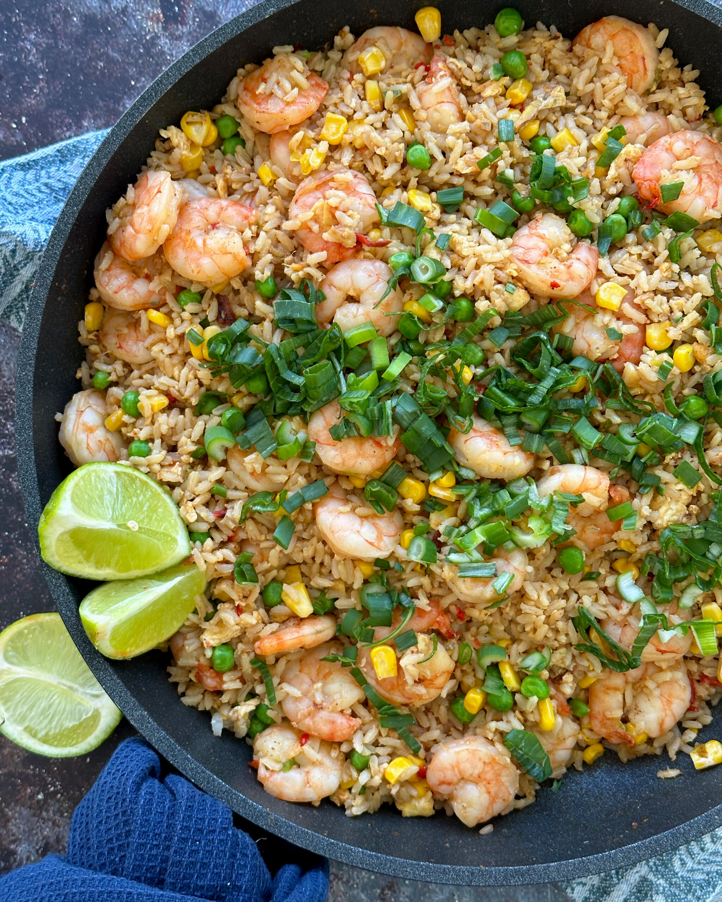
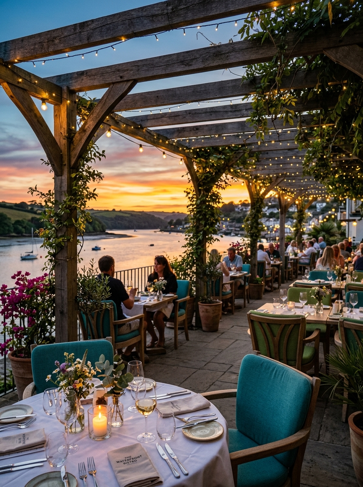

POPULAR PICK
Mexican Hot Chicken Pizza
চিজ, চিকেন, টমেটো, ক্যাপসিকাম ও হট চিলির মশলাদার সমন্বয়।
৳ ৭৪০ থেকে
FARIDPUR · BANGLADESH
পরিশীলিত পরিবেশে যত্নে তৈরি খাবার ও আন্তরিক আতিথেয়তা।

WELCOME TO TERRACOTTA
Terracotta Restaurant হলো পরিবার, বন্ধু ও প্রিয়জনদের নিয়ে সুন্দর সময় কাটানোর একটি উষ্ণ আয়োজন। ক্লাসিক স্বাদের প্রতি সম্মান রেখে, আধুনিক পরিবেশনায় আমরা তৈরি করি প্রতিটি স্মরণীয় মুহূর্ত।
দ্রুত দুপুরের লাঞ্চ থেকে উদযাপনের ডিনার—আমাদের দরজা সবসময় খোলা আপনার পরবর্তী সুন্দর অভিজ্ঞতার জন্য।
আমাদের গল্প জানুন →FROM OUR KITCHEN

চিজ, চিকেন, টমেটো, ক্যাপসিকাম ও হট চিলির মশলাদার সমন্বয়।
৳ ৭৪০ থেকেপ্রন, ডিম, সবজি ও থাই হার্বে তৈরি সুগন্ধি ফ্রাইড রাইস।
৳ ৬৩৮
থাই স্পাইসে মেরিনেট করা ক্রিসপি চিকেন—শেয়ার করার জন্য আদর্শ।
৳ ৪৮৯MORE THAN A MEAL
ইন্টিমেট ডিনার, পারিবারিক মিলনমেলা কিংবা বিশেষ উদযাপন—Terracotta-তে আপনার প্রতিটি আয়োজন পায় মনোযোগী আতিথেয়তা।
অভিজ্ঞতাগুলো দেখুন →
A TASTE OF TERRACOTTA





MAKE A RESERVATION
দৈনন্দিন ডাইনিং, পরিবারের আয়োজন বা বিশেষ উপলক্ষ—আপনার সময়টি আগেই নিশ্চিত করুন।